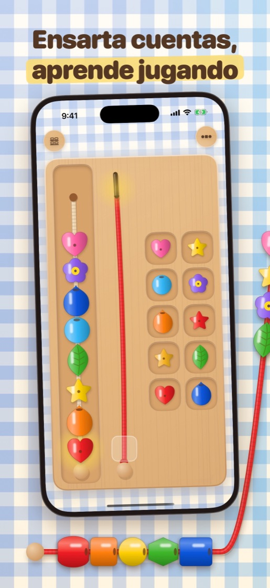
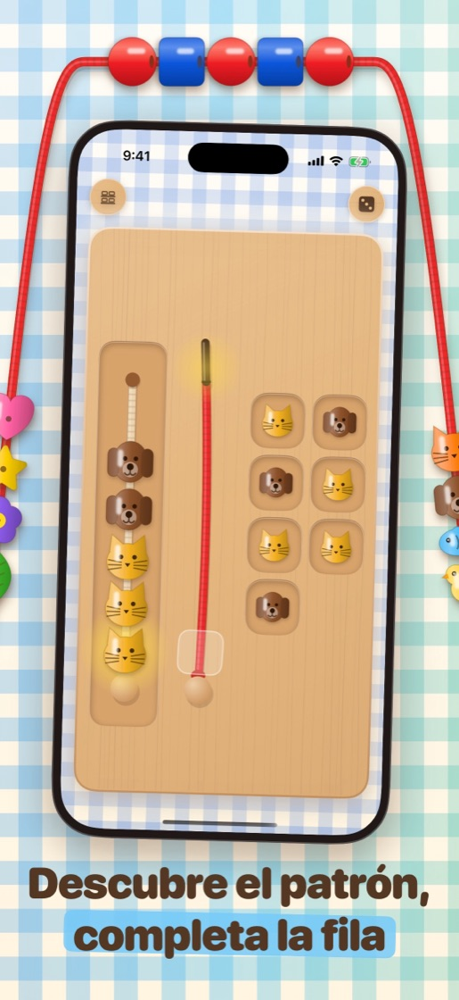
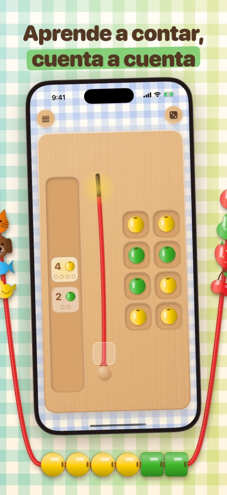
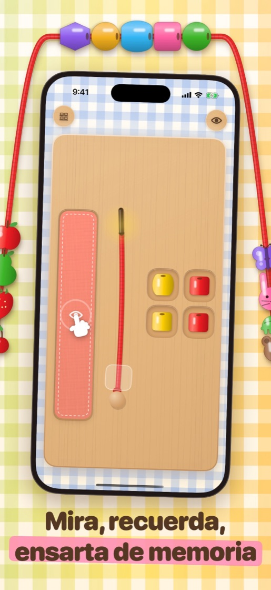
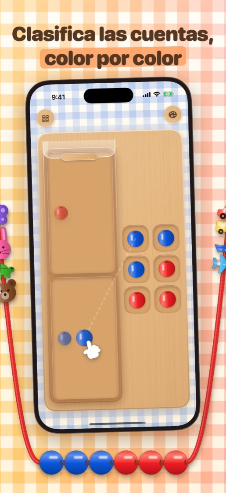
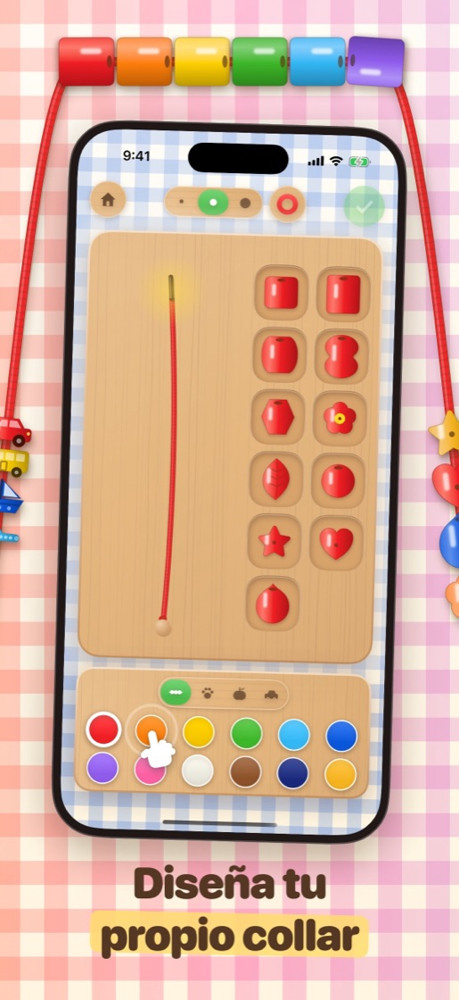
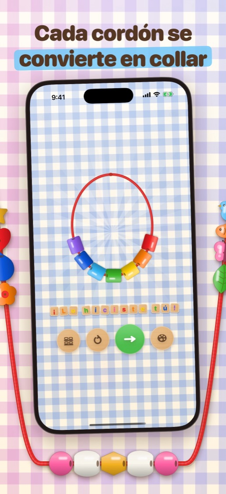
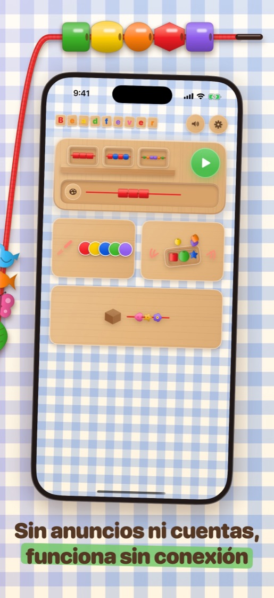

Materiales reales
Cuentas de madera pintadas, un cordón rojo trenzado con punta rígida y un tope de madera. El color tiene significado; nada es solo decoración.
Ensartar cuentas Montessori para manos pequeñas
Toma una cuenta de madera, llévala a la punta del cordón y mira cómo se desliza. Copia el modelo cuenta a cuenta y haz tu propio collar.
Descarga gratuita · iPhone y iPad
Beadfever se inspira en las cuentas de madera para ensartar que hay en todas las aulas Montessori. Una sola bandeja de madera lo reúne todo: el cordón de ejemplo a la izquierda, el del niño en el centro y la bandeja de cuentas a la derecha. Cada cuenta queda a la altura de su pareja del ejemplo, así copiar resulta natural.
No hay puntos, estrellas ni cronómetros. Una cuenta equivocada vuelve a la bandeja y la correcta del ejemplo brilla un momento. Cuando el cordón está completo, el niño ve el collar que ha hecho. Esa es la recompensa.








Cuentas de madera pintadas, un cordón rojo trenzado con punta rígida y un tope de madera. El color tiene significado; nada es solo decoración.
El propio material muestra el error: la cuenta vuelve a la bandeja y el ejemplo brilla. El niño lo nota y corrige sin regaños.
Sin estrellas, puntos ni rachas. Terminar muestra el collar que hizo el niño; repetir o seguir es su elección.
Los trabajos esperan en estantes de madera de fácil a difícil. Los aún no presentados muestran cuentas de madera sin pintar.
Cada paso aísla una dificultad y luego las combina.
Juego libre: elige un color, cualquier forma o animal y ensarta tu propio collar. Toca la última cuenta para quitarla.
Aquí se guardan todos los trabajos terminados y collares del taller: la colección del niño.
Sin meta ni puntos: echa cuentas, inclina y agita, estira las gomas y recoge las cuentas con el imán.
Un adulto prepara la secuencia y el niño la ensarta. Las favoritas se guardan en el estante.
«Cubo, rojo; barril, amarillo…» – la secuencia se lee en el idioma del niño.
Figuras planas de madera pintada – pez, pájaro, tortuga, oso, gato y perro, además de cuentas de frutas y vehículos – en el estante y en el taller.
Aproximadamente de 2 a 6 años. Para los más pequeños elige «Fácil» en los ajustes: objetivo más grande e imán más fuerte en la punta.
No. Todo, incluida la lectura en voz alta, funciona sin conexión.
La educación Montessori evita los premios externos para que la alegría del propio trabajo guíe al niño. El collar que hizo es la recompensa.
Toca el engranaje y responde a la multiplicación.
iPhone y iPad con iOS 18 o posterior, en cualquier orientación en iPad. Inglés, turco, alemán, español y francés.
Sí: Área de padres → Datos → Restablecer el progreso. Allí también se vacía la caja del tesoro.
¿Preguntas, ideas o una cuenta que tu hijo echa de menos? Escribe a selahattincincin@gmail.com.